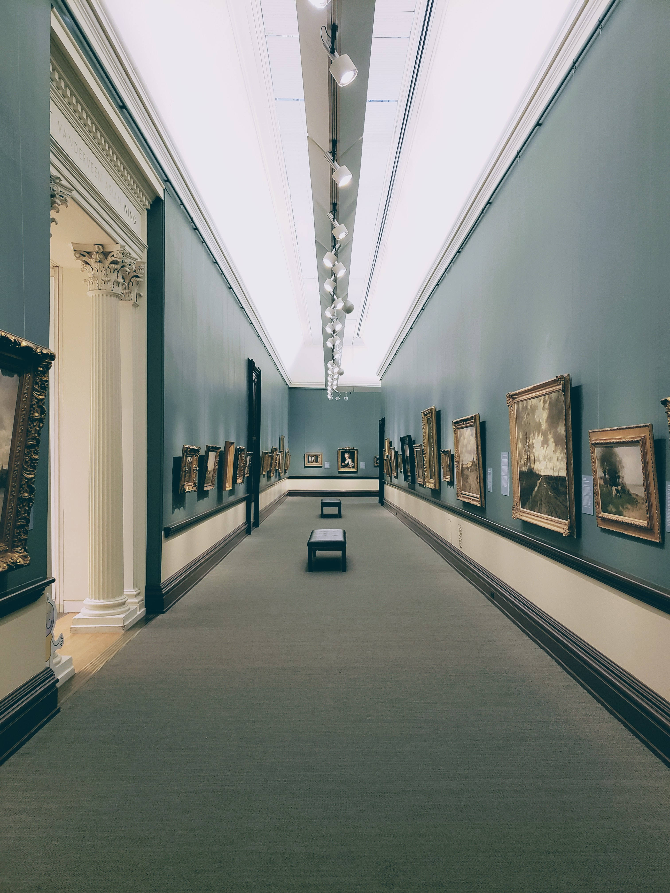

예술에 관한 고찰

예술은 정신과 마음의 거울이다. 의복 또한, 그 사람의 정신과 마음을 나타낼 수 있다.
하나님께서는, 사람에게 '정신과 마음'을 주시고, 그것을 통해 소통하십니다
인간은 하나님과 소통할 수 있는 기본적인 구조를 갖고 태어나지만, 그것을 사용하지 않는다면 그 구조는 무의미합니다.
우리의 삶 전반에 하나님을 느끼기 위해서는 하나님의 마음을 알아야만 합니다. 서로 마음이 맞아야 대화가 통한다" 라는 말처럼,
우리가 '정신과 마음'이라는 것을 지니고 태어나, 하나님의 마음을 알고, 그 마음과 맞닿게 된다면, 우리는 하나님과 소통하는 기적을 만나게 됩니다.